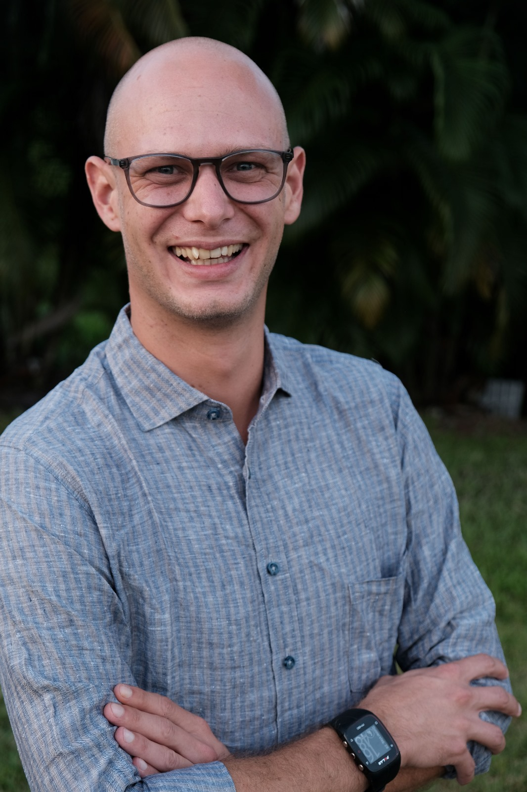

Our Ambassadors
Sea Clear wouldn’t be what it is today without the people and businesses who support, share, and believe in our mission. From dive shops that trust our defog to ocean lovers capturing its beauty—this page is for you.
We’re proud to work alongside a growing community of divers, photographers, conservationists, and friends who help keep our oceans clean, one fog-free dive at a time. Thank you for being part of the Sea Clear journey!
Featured Ambassadors
Divine Divers

Divine Divers is one of the earliest ambassadors of Sea Clear Solutions. Based on Gili Meno, this dedicated dive center stands out for its strong focus on ocean conservation and sustainable diving practices. With a team deeply connected to the underwater world, Divine Divers helps spread our message of reef-friendly habits and responsible tourism—one dive at a time.
Michael Heimgartner
Michael is the talented underwater photographer behind all the coral imagery on the Sea Clear Solutions website. His camera captures the delicate beauty of the reef with precision and heart. Each photo tells a story of life beneath the surface — reminding us what we’re working to protect. Michael’s deep respect for the ocean and his artistic eye make him an invaluable part of the Sea Clear Solutions family.